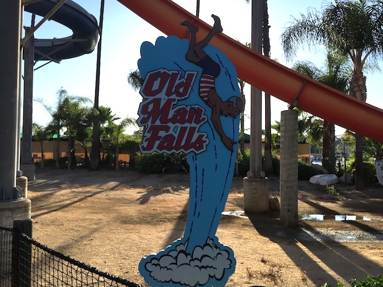

| |
Old Man Falls Review

We're on Old Man Falls, home to three different slides. The first slide we'll talk about is Pipeline. Pipeline (The yellow twisted enclosed slide) is a fun slide. You gain a lot of speed going through it and the twist at the end feels something like a waterslide version of Maverick. The second slide we'll be talking about is Point Break. Point Break (The Drop Slide) is also a lot of fun. If you're a dumbass like Cody, you can launch yourself into it, giving yourself quite some extra speed. And finally, there's Riptide. Riptide (The slide with the humps) is also a really fun slide. You do get some waterslide airtime going down. But beware, Riptide will scratch your back.
7/10
Location: Soak City
Opened: 2000
Built by: White Water Slides
Last Ridden: August 4, 2019
I have ridden this exact same ride at the following waterparks.
Six Flags Hurricane Harbor
Old Man Falls Photos

Home
|